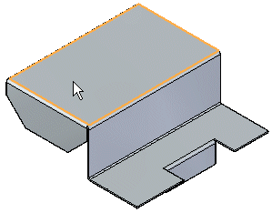
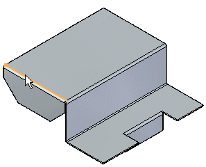
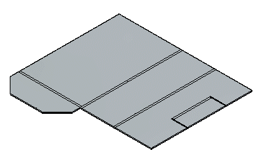

Construct a flat pattern in the sheet metal part document
-
Select Tools tab→Model → Flatten.
-
Select Tools tab→Flat group→Flat Pattern
 .
. -
Click a face to be oriented upward in the flat.

-
Click an edge to define the X axis and origin.

Note:The definition of the X axis is aligned or orientated with the Global X-axis of the sheet metal file.
-
Click to complete the flat pattern.

-
After flattening, you can use this command multiple times to adjust the orientation by selecting a new edge for alignment.
-
When you create a flat pattern, a Flat Pattern tab is added to PathFinder. You can delete the flat pattern by deleting the Flat Pattern entry in the Flat Pattern tab of PathFinder.
-
If the Sheet Metal model changes, the flat pattern will go out-of-date. This is indicated with a clock symbol overlapping the Flat Pattern tab in PathFinder. To update the flat pattern, click the Flat Pattern tab in PathFinder.
-
You can add PMI dimensions to the flat pattern.
-
The flat pattern created with the Flat Pattern command contains all bend centerline information used to create bend centerlines in Draft drawing views. It also contains the same information used by the Save As Flat command.
-
You can use the Flat Pattern Options dialog box to set a maximum flat pattern size. If the flat pattern violates the maximum size a warning icon is displayed adjacent to the flat pattern entry in PathFinder. This can help you determine whether or not the part can be manufactured due to sheet size limitations.
-
You can use the Simplify B-Splines option on the Flat Pattern Treatments tab on the Options dialog box to specify that any b-spline curves in the part are simplified to lines and arcs when creating the flat pattern. B-spline curves can be created when creating cutouts across bends and when using stencil font characters.
How do I
Apply a patch to relief in a flat patternSave and flatten a sheet metal part
Learn more
Flattening sheet metal partsCreating flat pattern drawings
Look up more details
Flat Pattern commandFlat Pattern command bar
Flat Pattern command bar
Flat Pattern Options dialog box
Relief Patch command
Relief Patch command bar
Save As Flat command
Save as Flat command bar
Save As Flat dialog box
Save As Flat DXF Options dialog box
Layers tab (Save As Flat DXF Options dialog box)
Bend Data tab (Save As Flat DXF Options dialog box)
Font Mapping tab (Save As Flat DXF Options dialog box)